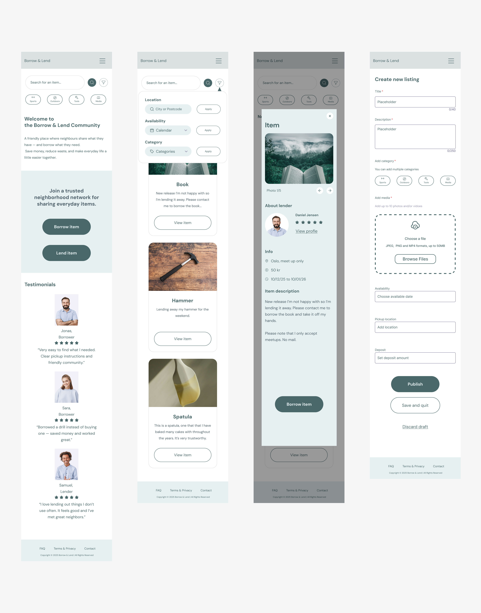
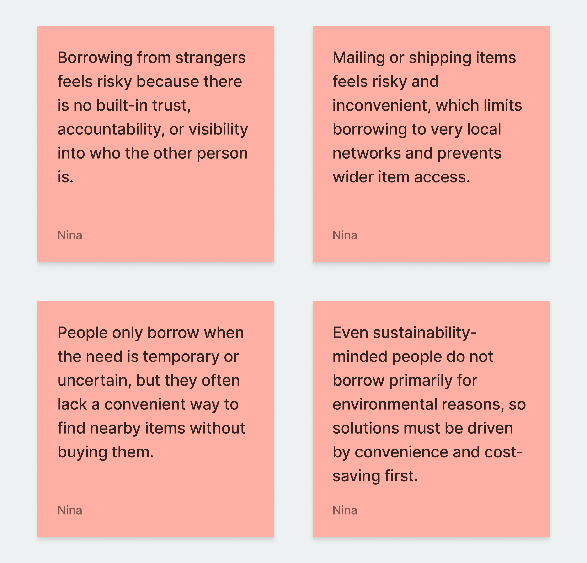
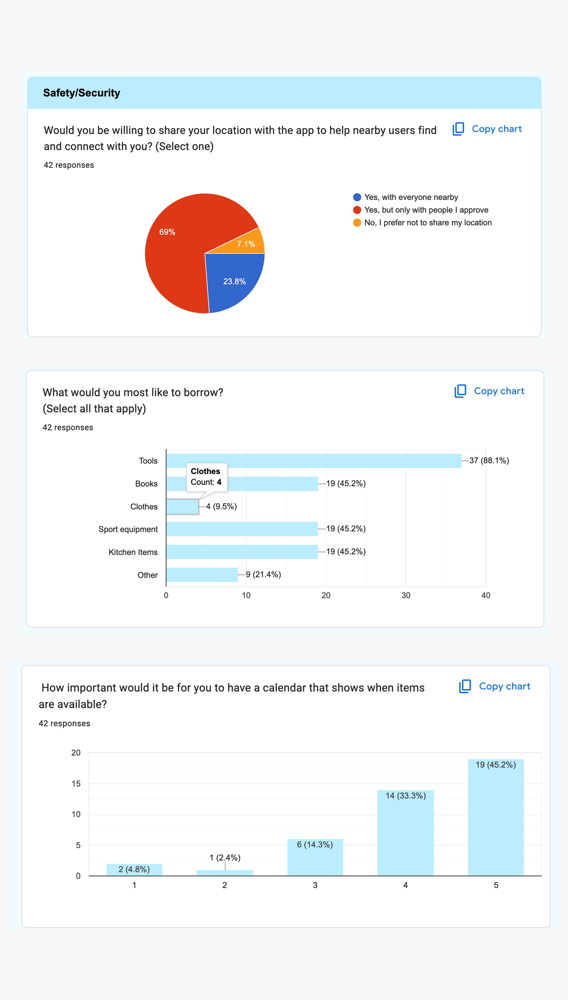
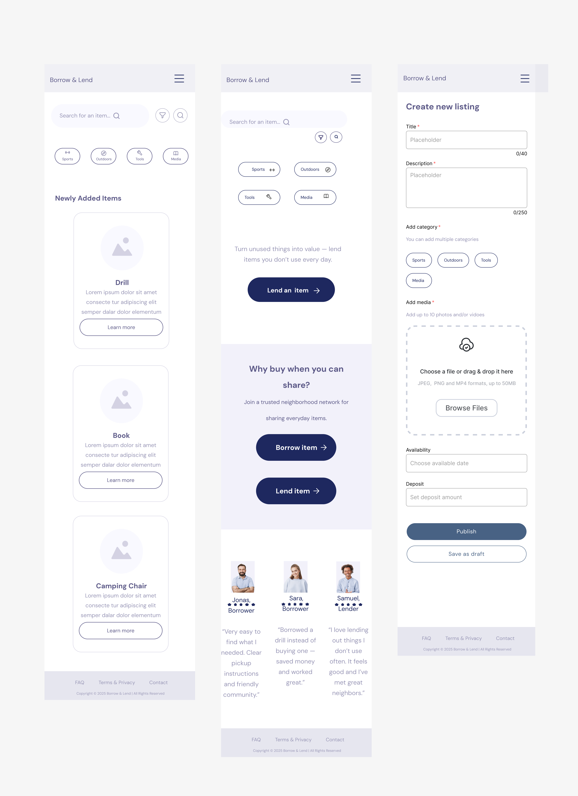
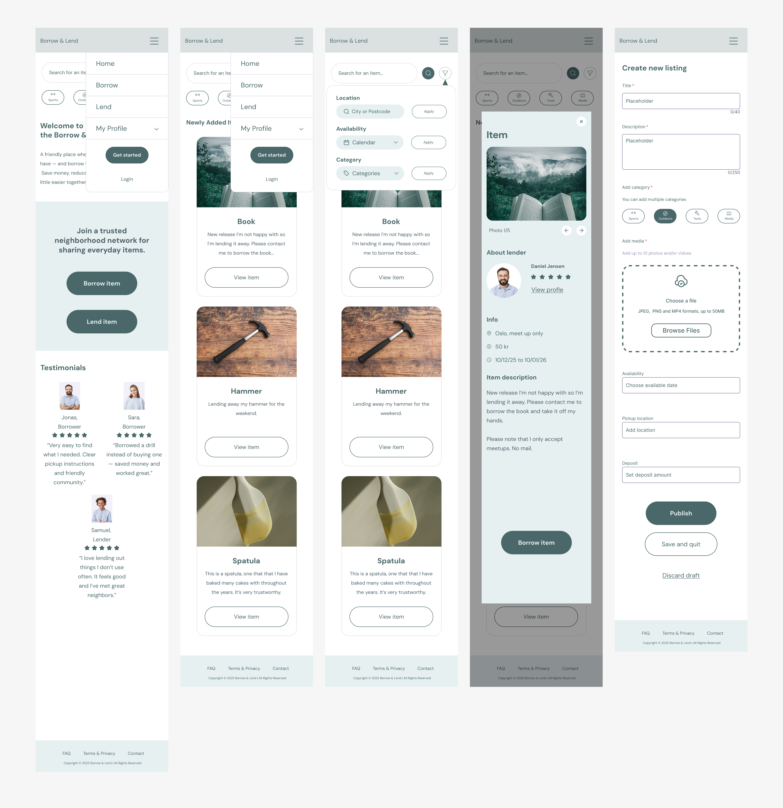

Borrow & Lend is a UX concept for a digital platform where people can borrow and lend everyday items within their local community. The project explored how trust, convenience and accessibility influence people’s willingness to share resources.
The project was developed as part of two courses at Oslo Nye Fagskole: UX Essentials and Agile Practices & Team Collaboration. Working in a team of three, we followed the full UX design process from research and problem definition to prototyping, usability testing and iteration. The project was developed through agile sprints, where tasks and responsibilities were shared across the team.

Borrowing items from others is not a natural first choice for most people. It is typically a situational behaviour, used when the need is temporary, uncertain, or infrequent. While the idea of sharing is positive, users are often hesitant due to concerns around trust, responsibility and coordination.
Our challenge was to design a solution that makes borrowing feel safe, simple and predictable. The experience needed to reduce uncertainty, support clear communication, and make local exchanges feel as easy as buying something new — while still encouraging responsible and respectful interactions between users.

To understand how people approach borrowing and sharing items, we conducted both qualitative and quantitative research. We carried out user interviews and distributed a survey with 42 respondents to explore habits, concerns and motivations related to borrowing everyday items.
The survey provided quantitative insights into borrowing habits, trust concerns and preferred item categories. These findings helped validate patterns from the interviews and gave us a clearer foundation for the design direction.
The findings were analysed and synthesised as a team, identifying key themes around trust, convenience and accessibility. I contributed to analysing the findings and translating them into insights that informed the design decisions.

The research revealed several important patterns that influenced the direction of the solution. While users were generally open to the idea of borrowing, their willingness depended heavily on trust, convenience and clarity.
These insights helped define the core challenges and guided the design decisions throughout the project.
Users hesitate to borrow from strangers due to lack of accountability and transparency.
People only consider borrowing when the need is temporary, rare or uncertain.
If borrowing feels complicated or time-consuming, users prefer to buy instead.
Users prefer borrowing within a short distance to avoid logistics and friction.
Users need clear expectations around condition, return and responsibility.
People feel more comfortable borrowing within trusted circles or familiar contexts.
Based on the research and insights, we narrowed the scope of the concept to the core parts of the borrowing experience. Rather than designing a full platform with many supporting features, we focused on the pages and functions that communicate the main value of the service most clearly.
The information architecture was structured around the key user flows: landing page, borrowing, lending, account management and communication. This helped us define what needed to be included in the prototype, and what could remain outside the scope of this iteration.
In practice, this meant prioritising clear navigation, item discovery, listing creation and the most essential trust-building elements. The goal was to make the experience easy to understand, simple to use and realistic within the timeframe of the project.
We prioritised the core borrowing and lending flows instead of designing a full-featured platform.
The information architecture was organised around landing, borrowing, lending, communication and account management.
We focused on navigation, item discovery, listing creation and the most important user actions.
Supporting pages and secondary features were considered out of scope for this prototype iteration.
We translated the structure and priorities from the information architecture into mid-fidelity wireframes. At this stage, the focus was on page layout, hierarchy and the most important user flows across the landing page, borrower view and lender view.
Working in wireframes allowed us to test how the content should be organised before moving further into visual refinement. It also helped us make sure that navigation, key actions and trust-building elements were placed in a clear and intuitive way.
These wireframes became an important bridge between the early concept work and the final prototype, helping us align the experience across pages and devices.

Based on the validated structure and flows from the wireframes, we developed a high-fidelity prototype focusing on clarity, trust and ease of use. The design aimed to make borrowing feel simple, transparent and accessible from the first interaction.
We focused on clear visual hierarchy, intuitive navigation and consistent components to guide users through the borrowing and lending process. Special attention was given to trust-building elements such as user profiles, item details and communication between users.
The final design reflects the core priorities defined earlier in the process, translating insights into a cohesive and user-friendly experience.

This project significantly changed how I approach design. Before working with UX in a structured way, I relied more on intuition and personal assumptions. Through research, synthesis and testing, I learned to base decisions on user insights rather than preferences.
One of the most valuable learnings was understanding that good solutions emerge through iteration. Instead of trying to perfect ideas early, I learned to explore, test and refine continuously. This shift helped me become more confident in both my process and my design decisions.
Working in an Agile team also challenged me to communicate more clearly, ask questions and adapt to shared workflows. Over time, I became more comfortable contributing actively and trusting both the process and the team.
Overall, the project strengthened my understanding of UX as an ongoing, user-centred process. It also confirmed that designing meaningful solutions requires both structure, collaboration and continuous learning.
Email: finstad83@gmail.com